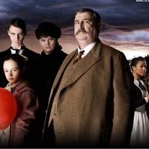

| Home | The Doctors | The Companions | The Villains |
|
|||
The Family of BloodThe Family of Blood are a family who appear in the episodes "Human Nature" and "The Family of Blood" (2007) in which they are the titular entity. They are incorporeal, green telepathic creatures and refer to each other by their relationship followed by "of Mine"; "Father/Husband of Mine", "Mother/Wife of Mine", "Son/Brother of Mine" (who appears to assume leadership) and "Sister/Daughter of Mine". Because of their lack of form, they required a physical body to inhabit; they only had short lifespans without them and as such, sought that of a Time Lord and pursued the last Time Lord: the Tenth Doctor, who chose to alter his biodata to become a human schoolteacher in England, 1913 until their lifespans expired in three months' time; he did this not out of fear but rather as an act of mercy so that they would slowly "die out" instead rather than be immediately destroyed. They had a time vortex manipulator allowing them to time travel. Their spaceship was stolen and was protected by an invisible shield. They could also animate different things for servants – in the case of their 1913 invasion of Earth, scarecrows – using "molecular fringe animation". They also possess hand-held energy firearms capable of disintegrating flesh and cloth. The Family possessed the forms of four humans: Mr. Clark, a farmer; Jenny, a maid at the school; Jeremy Baines, a school prefect; and Lucy Cartwright, a small girl. The original souls of the humans were replaced, the original bodies only existing as vessels for the Family. After the destruction of their starship, the Doctor grants the Family their wish for immortality although, in doing so, he also gives them everlasting punishments for their crimes. The are respectively tied up in unbreakable chains forged from dwarf star metal, trapped on the event horizon of a collapsing galaxy, frozen in time and dressed as a Scarecrow and left in the fields to watch over England as its protector, and trapped inside every mirror and unable to leave, still able to be glimpsed fleetingly by humans. |